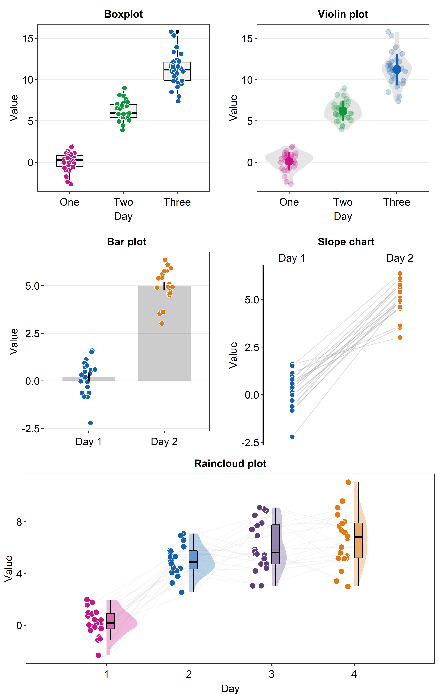
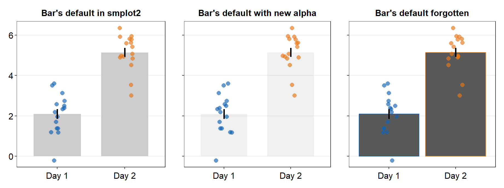
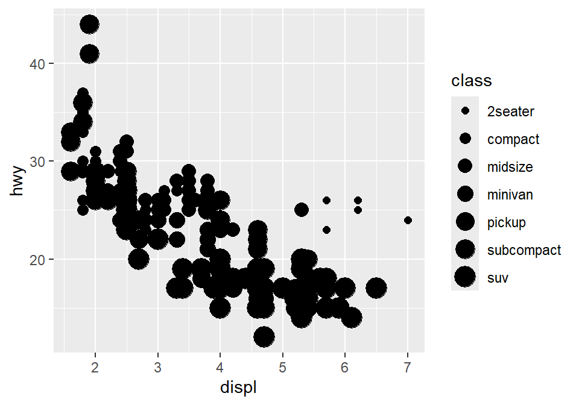
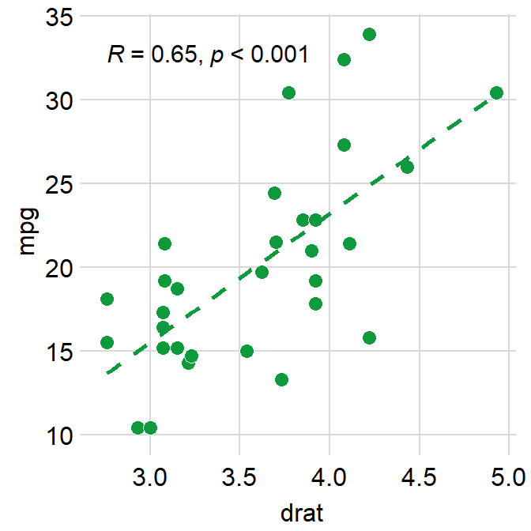
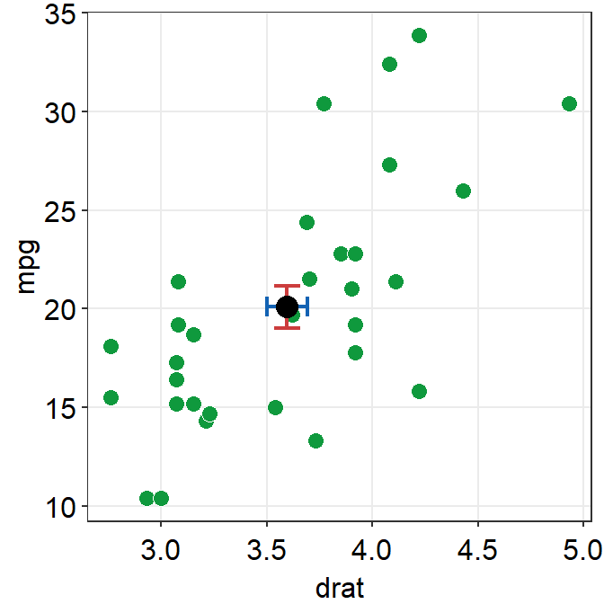
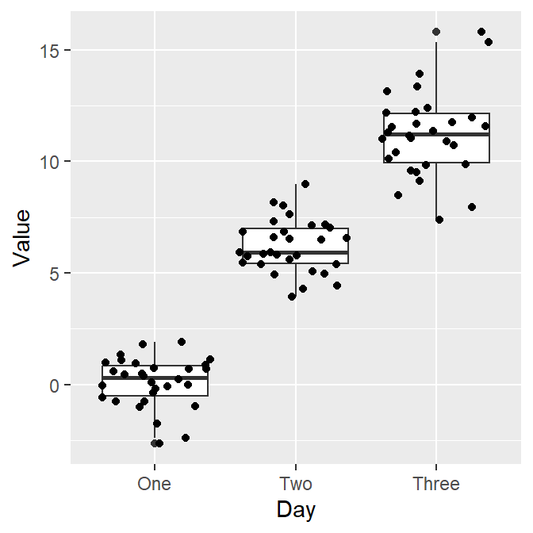
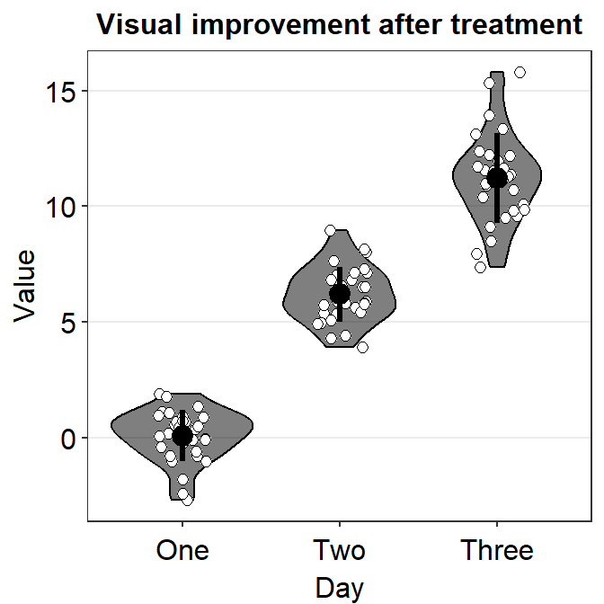
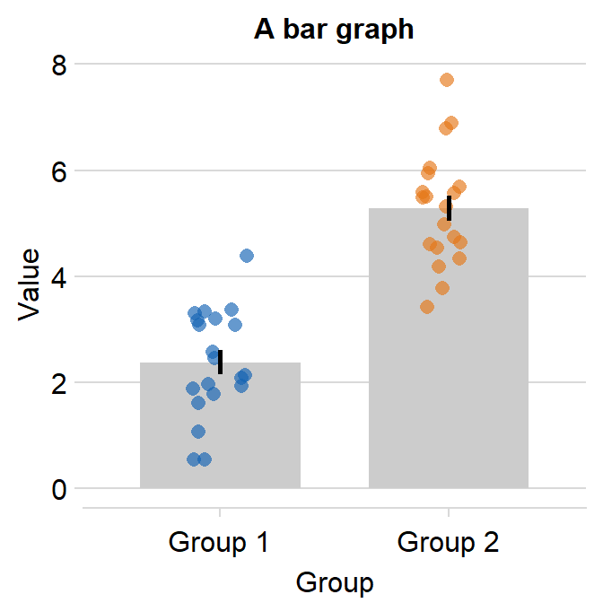
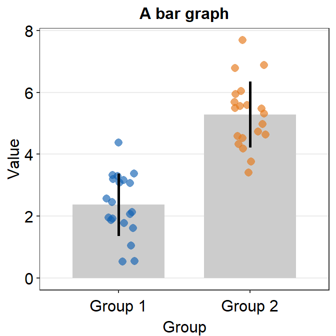
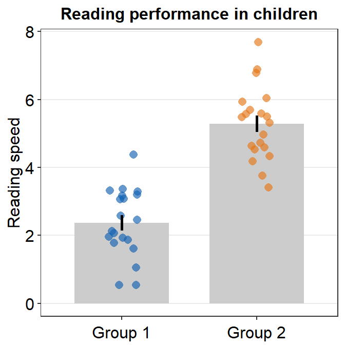

Welcome!

This book guides the reader to be familiar with R, a programming language, for data visualization. It also introduces the R package smplot, which aims to make the process of data visualization simple. This book was created entirely using RMarkdown for reproducibility.
Note: If you are interested in recreating this figure, please read Chapter 5.
Please cite this paper when smplot is used
Seung Hyun Min, Jiawei Zhou. smplot: An R Package for Easy and Elegant Data Visualization (2021). Frontiers in Genetics, 12:802894.
For R and ggplot2 experts
Please skip Chapters 1-3.
Issues and Contact
If you spot any mistakes in this online book, please pull-request on Github or email me seung.min@mail.mcgill.ca. If you find issues with the ‘smplot’ package, please pull-request on Github.
License
smplot is under the MIT license. This tutorial is licensed under a Creative Commons Attribution 4.0 International License.
1 Download RStudio & Basics of R
1.1 Setting up RStudio
Why use R for data visualization?
- R is free.
- Often, less codes are needed in R to plot an elegant graph.
- for/while loops (basic concepts in programming) are not necessary in R to make a production-quality graph.
- R is the best software for statistical analysis.
Other available resources for R
- Stack Overflow: https://www.stackoverflow.com
- R for Data Science (a bible for learning R): https://r4ds.had.co.nz/
- R documentation: https://www.rdocumentation.org
- Learn Statistics with R: https://learningstatisticswithr.com/
- ggplot2 (a reference for plotting data in R): https://ggplot2-book.org/
Download requirements for RStudio
- Download R: http://cran.r-project.org/
- For Mac users: Mac: XQuartz https://www.xquartz.org/
- RStudio: http://www.rstudio.org/
Open RStudio

(#fig:pressure)Rstudio layout, image from http://www.sthda.com/english/wiki/running-rstudio-and-setting-up-your-working-directory-easy-r-programming
- Rstudio is where people do R programming.
- You can type codes (commands) into the console (bottom-left panel).
>means that the console is ready to receive more code.+means your code is not complete.
- You can also write (longer) codes in the script within the code editor (top-left panel).
- The code editor will run the script into the console.
- A new script can be opened by clicking: File -> New -> R Script.
- You can run a script by clicking ’Run" with the green arrow or by typing ctrl + enter. It is labeled with the red circle.
- Or you can just type your codes directly into the console.
Let’s make a folder and set it as working directory

(#fig:unnamed-chunk-2)Setting your working directory, image from https://www.ucl.ac.uk/~uctqiax/PUBLG100/2015/faq/setwd.html
- Create a folder named LearnR in Desktop.
- Set the folder as your working directory by clicking: Session -> Set Working Directory -> Choose Directory. Then find your LearnR folder.
- More information about setting up a directory is here: http://www.sthda.com/english/wiki/running-rstudio-and-setting-up-your-working-directory-easy-r-programming
- You will need set the directory every time you start RStudio.
1.2 Basics of R
Let’s type some codes
- Capitalization, punctuations and brackets are all important.
' 'and" "mean the same.- However,
' "are not paired. So they will not work. =and<-mean equivalent.- I often use
<-.
- I often use
- Type
?when you are not sure about the code (ex.?t.test) - A code becomes comment when it is preceded by
#.- Try typing
# g = 3and see if the number gets stored in g by typing g in the console.
- Try typing
x = 3 # x equals to 3
a <- 4 # a equals to 4
d <- 'Group' # gr is equal to a character 'Group', which is not a number.
e <- "Group"
d == e # 'Group' and "Group" are equal## [1] TRUE# g = 3 # its a comment- Notice that I used
==to test if d and e are equal. Therefore,==and=mean different.==tests if two things are equal.=sets two things to be equal.d == ereturnsTRUEbecause they are both'Group'.TRUEis equivalent to 1 numerically.
- Now let’s check if x and a are equal.
x == a## [1] FALSEIt returns
FALSEbecause x and a are not equal. This is correct because 3 and 4 are not equal.FALSEequals to 0 numerically.Below are more examples showing that
TRUE= 1 andFALSE= 0.
TRUE + FALSE # 1 + 0## [1] 1TRUE + TRUE # 1 + 1## [1] 2FALSE + FALSE # 0 + 0## [1] 0TRUE*2 # 1 * 2## [1] 2TRUE*FALSE # 1 * 0## [1] 0How can I learn most effectively with the notes?
- Don’t just read it.
- Don’t just copy and paste the codes and run them in RStudio (ctrl + c & ctrl + p). Make sure you type each code.
- You can also change your code and see if it still works.
- If you are not sure of your code, you can type
?before the function. - If you are still not sure after reading the notes, check out Chapter 3 of R for Data Science: https://r4ds.had.co.nz/
More installation
- R is an old programming language.
- So, people, such as statisticians and programmers, have created more functions in R in the form of the package to update the language. They are free but they have to be downloaded separately.
- A package can contain several functions.
- In this tutorial, you will mainly be using ggplot2 package, which is elegant and flexible for visualizing data.
- Also, you will be using smplot package. It improves ggplot2 graphs visually.
- So, you will need to install some packages, such as ggplot2 and smplot. Please type the codes below.
install.packages('tidyverse') # tidyverse was created by Hadley Wickham at RStudio, tidyverse includes ggplot2
install.packages('devtools')
devtools::install_github('smin95/smplot') - You only need to install them once, but you will need to reload them whenever you start a new session in RStudio using the function
library().
library(tidyverse) # it has ggplot2 package
library(cowplot) # it allows you to save figures in .png file
library(smplot)- Now let’s make some graphs in the subsequent chapters.
2 Basics of ggplot2 and Correlation Plot
Load these packages by typing the codes below.
library(tidyverse) # it has ggplot2 package
library(cowplot) # it allows you to save figures in .png file
library(smplot)2.1 Upload sample data
Sample data: mpg
- I will be using an example from the book R for Data Science (https://r4ds.had.co.nz/data-visualisation.html).
- Question: Do cars with large engines use up more fuel than the those with small ones?
- Let’s open mpg, which is a data frame stored in the ggplot2 package.
- mpg contains data about cars in the US. You can type
?mpgfor more information.- displ: the size of the car’s engine in liters
- hwy: fuel efficiency. If it’s high, then the car uses less fuel per distance.
mpg## # A tibble: 234 x 11
## manufacturer model displ year cyl trans drv cty hwy fl
## <chr> <chr> <dbl> <int> <int> <chr> <chr> <int> <int> <chr>
## 1 audi a4 1.8 1999 4 auto(l~ f 18 29 p
## 2 audi a4 1.8 1999 4 manual~ f 21 29 p
## 3 audi a4 2 2008 4 manual~ f 20 31 p
## 4 audi a4 2 2008 4 auto(a~ f 21 30 p
## 5 audi a4 2.8 1999 6 auto(l~ f 16 26 p
## 6 audi a4 2.8 1999 6 manual~ f 18 26 p
## 7 audi a4 3.1 2008 6 auto(a~ f 18 27 p
## 8 audi a4 quat~ 1.8 1999 4 manual~ 4 18 26 p
## 9 audi a4 quat~ 1.8 1999 4 auto(l~ 4 16 25 p
## 10 audi a4 quat~ 2 2008 4 manual~ 4 20 28 p
## # ... with 224 more rows, and 1 more variable: class <chr>- Notice that some columns and rows are not shown. You can type
View(mpg)to see the entire data frame. - Each row is an unique observation.
- Each column is an unique variable/condition.
View(mpg)2.2 Basics of ggplot2
Let’s make some graphs
- Question: Do cars with large engines use up more fuel than the those with small ones?
- To answer our question, we need to plot mpg data. The x-axis should be displ, the y-axis should be hwy.
ggplot(data = mpg) +
geom_point(mapping = aes(x = displ, y = hwy))
- We find that a smaller car has a higher efficiency and that a larger car has a lower efficiency. In other words, we see a negative relationship.
How ggplot works
- When you are making a graph with ggplot2, always begin by typing the function
ggplot().- The data you want to plot is the first argument here. Ex.
ggplot(data = mpg).
- The data you want to plot is the first argument here. Ex.
- However,
ggplot(data = mpg)alone does not create a graph. You will need add (by typing +) more layers, such asgeom_point().geom_point()adds points to your graphs. You will need to specify (or map) x- and y-axes in theaes()function, which means aesthetics. This process is called mapping.- As you might expect, there are other geom functions, such as
geom_bar(),geom_boxplot(),geom_errorbar(). They plot bar graphs, boxplots and error bars, respectively.
- Here is the template for using ggplot2 (copied from R for Data Science).
ggplot(data = <DATA>) +
<GEOM_FUNCTION>(mapping = aes(<MAPPINGS>))Different color of points for each unique group
- You can apply different colors by the class of each car (each car = each row of the mpg data frame).
- Include
classvariable in theaes()function. - This maps the third variable
classinto your graph. aes()means aesthetic (ex. color, shape, etc).
- Include
ggplot(data = mpg) +
geom_point(mapping = aes(x = displ, y = hwy, color = class))
- You can also set different shapes for each group of the data.
ggplot(data = mpg) +
geom_point(mapping = aes(x = displ, y = hwy, shape = class))
- Or size or transparency (not recommended). But you get the idea. Using
aes()in a geom function (ex.geom_point()), you can label different group of points.
# different levels of transparency (alpha) for each group
ggplot(data = mpg) +
geom_point(mapping = aes(x = displ, y = hwy, alpha = class))
# different sizes of the points for each group
ggplot(data = mpg) +
geom_point(mapping = aes(x = displ, y = hwy, size = class))
Different color & shape for each group
- You can also apply different color & shape for each group of the data.
- Exercise: Try it on your own before you look at the code below.
ggplot(data = mpg) +
geom_point(mapping = aes(x = displ, y = hwy, color = class,
shape = class))Same shape across all groups
- So far, you have put variables such as
shapeandcolorinside the functionaes().- This has enabled you to apply different shape and color for each group.
- If you put the variable for
shape,color,sizeoutside ofaes()in the geom function, then all data points will have the specifiedshape,color, etc even if they are in different groups.
ggplot(data = mpg) +
geom_point(mapping = aes(x = displ, y = hwy,
color = class), shape = 17)
- Notice that the
coloris different for each group because it is inside the functionaes(). However, all the points are triangle because we have typedshape = 17outside the functionaes(). - Exercise: try changing the shape of the points to the circle with the border.
(#fig:unnamed-chunk-19)image from http://www.sthda.com/english/wiki/ggplot2-point-shapes
Exercise: try changing the shape of the points to the circle with the border.
- When
shape = 19, the shape is the circle without the border. - When
shape = 20, the shape is the small circle without the border. - When
shape = 21, the shape is the circle with the border. - So let’s set
shapeto 21.
ggplot(data = mpg) +
geom_point(mapping = aes(x = displ, y = hwy, color = class), shape = 21)
- Notice that the border color is different for each group, but not the color that fills the circle.
- Shapes without their borders (15-20) are filled with
color. - Shapes with the border (21-24) are filled with
filland its border colored withcolor. - So let’s change
color = Classtofill = Class.
ggplot(data = mpg) +
geom_point(mapping = aes(x = displ, y = hwy, fill = class), shape = 21)
How do we draw the best-fit line of the graph?
- Here is our graph.
ggplot(data = mpg) +
geom_point(mapping = aes(x = displ, y = hwy))- There seems to be a negative relationship.
- How do we draw the best-fit line of the graph’s negative relationship?
- Use another geom function
geom_smooth().
ggplot(data = mpg) +
geom_smooth(mapping = aes(x = displ, y = hwy))## `geom_smooth()` using method = 'loess' and formula 'y ~ x'
geom_point() + geom_smooth()
- Now let’s combine geom_point() + geom_smooth() into one graph.
ggplot(data = mpg) +
geom_point(mapping = aes(x = displ, y = hwy)) +
geom_smooth(mapping = aes(x = displ, y = hwy))## `geom_smooth()` using method = 'loess' and formula 'y ~ x'
ggplot()acts as a system where you can add multiplegeomobjects, such asgeom_point()andgeom_smooth().- You can add multiple layers of geom in a single plot, like shown here.
ggplot()and at least one geom function are necessary to draw a graph.ggplot()alone does not draw a graph. Try it on your own.
ggplot(data = mpg)
Writing shorter codes
ggplot(data = mpg) +
geom_point(mapping = aes(x = displ, y = hwy)) +
geom_smooth(mapping = aes(x = displ, y = hwy))- Notice that we have typed
mapping = aes(x = displ, y = hwy)twice. This is repetitive. - If you type the
mappingargument inggplot(), you won’t need to type them anymore in the subsequentgeomfunctions.
ggplot(data = mpg, mapping = aes(x = displ, y = hwy)) +
geom_point() +
geom_smooth()## `geom_smooth()` using method = 'loess' and formula 'y ~ x'
This is exactly the same as the previous graph. In both cases, the mapping has been set so that the x-axis is
displand the y-axis ishwyin bothgeom_point()andgeom_smooth().Now let’s apply different color of points and the fit the line for each group.
ggplot(data = mpg, mapping = aes(x = displ, y = hwy, color = class)) +
geom_point() +
geom_smooth()## `geom_smooth()` using method = 'loess' and formula 'y ~ x'
- Okay, this is extremely messy and probably a bad idea.
- You might have gotten
warningsbut you can usually ignore them.
- You might have gotten
- Let’s plot the best-fit line across all groups (i.e., one best-fit line) but apply different color for each class (i.e., many colors).
- To do so, type
color = classin geom_point, notggplot(). This enables you to specify that you will apply different color for each class only ingeom_point()but not ingeom_smooth().
ggplot(data = mpg, mapping = aes(x = displ, y = hwy)) +
geom_point(aes(color = class)) +
geom_smooth()## `geom_smooth()` using method = 'loess' and formula 'y ~ x'
2.3 Improve dataviz using smplot
- Although the default theme of ggplot2 graphs is clean, there are some things that I do not like:
- The fonts are too small.
- The grey background is distracting.
- There are too many grids.
ggplot(data = mpg, mapping = aes(x = displ, y = hwy, color = class)) +
geom_point() - Let’s make this graph prettier by using functions from smplot.
- In this example, let’s use
sm_corr_theme(). I’ve made this function as a theme suitable for correlation plots. - Disclaimer: smplot package has been built based on my preference.
- smplot is not necessary to make a ggplot graph or change its style. It is possible to change every aspect of the graph with ggplot2 but this requires about 8-20 lines of codes (based on my experience). Instead, smplot function does so in one line of code.
- In this example, let’s use
ggplot(data = mpg, mapping = aes(x = displ, y = hwy, color = class)) +
geom_point() +
sm_corr_theme()
- Now let’s remove the border within
sm_corr_theme()by settingborders = FALSE.
ggplot(data = mpg, mapping = aes(x = displ, y = hwy, color = class)) +
geom_point() +
sm_corr_theme(borders = FALSE)
- Exercise: You can also set
borders = TRUEand see what happens.
ggplot(data = mpg, mapping = aes(x = displ, y = hwy, color = class)) +
geom_point() +
sm_corr_theme(borders = TRUE)You might notice that borders come back. This is exactly what happens when you do not include
bordersargument insm_corr_theme(). This is becausesm_corr_theme()is set toborders = TRUEas default.I think the one with the border looks better.
You can also remove the legend by setting
legends = FALSEinsm_corr_theme().
ggplot(data = mpg, mapping = aes(x = displ, y = hwy, color = class)) +
geom_point() +
sm_corr_theme(legends = FALSE)
- Exercise Set
legends = TRUEand see what happens. Type?sm_corr_themeto see why legends appear without directly writinglegends = TRUE.
ggplot(data = mpg, mapping = aes(x = displ, y = hwy, color = class)) +
geom_point() +
sm_corr_theme(legends = TRUE)- However, in this case, I think we need a legend because there are many classes.
Positive relationship between x- and y-axes
- Let’s plot another scatterplot using mtcars data.
- Set the x-axis with drat and y-axis with mpg.
- Since you are making a scatterplot, you will need to use
geom_point(). - Set the size of all points to 3 by typing
size = 3. - Set the shape of all points to the circle with a border by typing
shape = 21. - Set the filled color of all points to green by typing
fill = '#0f993d'. - Set the border color to white by typing
color = 'white'.- Since
shape = 21refers to the circle with a border,fillis the color that fills the points andcoloris the border color.
- Since
ggplot(data = mtcars, mapping = aes(x = drat, y = mpg)) +
geom_point(shape = 21, fill = '#0f993d', color = 'white',
size = 3) 
drat and mpg have a positive relationship.
Now let’s make it pretty by adding
sm_corr_theme().
ggplot(data = mtcars, mapping = aes(x = drat, y = mpg)) +
geom_point(shape = 21, fill = '#0f993d', color = 'white', size = 3) +
sm_corr_theme()
- You can remove borders too by setting
borders = FALSEinsm_corr_theme().
ggplot(data = mtcars, mapping = aes(x = drat, y = mpg)) +
geom_point(shape = 21, fill = '#0f993d', color = 'white', size = 3) +
sm_corr_theme(borders = FALSE)
Reporting statistics from a paired correlation
- smplot also offers a function that plots the best-fit line of a scatterplot (i.e., correlation plot) and prints statistical values, such as p- and R-values.
- p-value is used to check for statistical significance. If it’s less than 0.05, its regarded as statistically significant. However, it gets smaller with a larger sample size.
- R-value (correlation coefficient) measures the strength and the direction of the correlation. It ranges from -1 to 1. It does not depend on the sample size.
- Let’s add a function
sm_statCorr(). The statistical results are from Pearson’s correlation test.
ggplot(data = mtcars, mapping = aes(x = drat, y = mpg)) +
geom_point(shape = 21, fill = '#0f993d', color = 'white', size = 3) + sm_corr_theme() +
sm_statCorr()## `geom_smooth()` using formula 'y ~ x'
- I don’t really like how the line color is different from that of the points. Let’s change the color to green.
- Also let’s get results from Spearman’s correlation test rather than from Pearson’s.
- To do so, type
corr_method = 'spearman'in the functionsm_statCorr(). You will get a different R value from 0.68, which is from Pearson’s correlation test.
- To do so, type
ggplot(data = mtcars, mapping = aes(x = drat, y = mpg)) +
geom_point(shape = 21, fill = '#0f993d', color = 'white', size = 3) +
sm_corr_theme() +
sm_statCorr(color = '#0f993d', corr_method = 'spearman')## `geom_smooth()` using formula 'y ~ x'
- Exercise: Set
corr_method = 'pearson'and see what happens.
ggplot(data = mtcars, aes(x = drat, y = mpg)) +
geom_point(shape = 21, fill = '#0f993d', color = 'white', size = 3) +
sm_corr_theme() +
sm_statCorr(color = '#0f993d', corr_method = 'pearson')You will see that this is exactly the same as when
corr_methodargument is not included insm_statCorr(). In short, the default correlation method forsm_statCorr()is'pearson'. So, if you don’t write anything forcorr_method, it will give results from Pearson’s correlation test. Type?sm_statCorrto see the default ofline_type.#0f993dis a specific green that I like.Now, let’s change the color. Replace
'#0f993d'with'green'ingeom_point()andsm_statCorr.- This
'green'is the default green color of R.
- This
ggplot(data = mtcars, mapping = aes(x = drat, y = mpg)) +
geom_point(shape = 21, fill = 'green', color = 'white', size = 3) + sm_corr_theme() +
sm_statCorr(color = 'green')## `geom_smooth()` using formula 'y ~ x'- Which one do you prefer?
fill = '#0f993d' vs fill = 'green'
- I personally like
#0f993dmore. However, R does not recognize this color asgreen. - So how are you supposed to remember the color code?
- You do not have to. You can type
sm_color('green')instead. This is a function from the smplot package. sm_color()accepts the name of the color. If you want to get the hex codes (color codes) for red and green, typesm_color('red','green').
sm_color('red','green')- Again,
sm_color()has been built based on my preference. So it returns the hex codes of colors that I use most often. - There are many more color themes that are available in R. For more information, please check out Chapter 28 of R for Data Science (https://r4ds.had.co.nz/graphics-for-communication.html).
ggplot(data = mtcars, mapping = aes(x = drat, y = mpg)) +
geom_point(shape = 21, fill = sm_color('green'), color = 'white',size = 3) +
sm_corr_theme() +
sm_statCorr(color = sm_color('green'))## `geom_smooth()` using formula 'y ~ x'
- Exercise Change the color of the points and the best-fit line to
blueusingsm_color(). If you want to see all the color options forsm_color(), type?sm_color. There are 16 colors total.
ggplot(data = mtcars, mapping = aes(x = drat, y = mpg)) +
geom_point(shape = 21, fill = sm_color('blue'), color = 'white',size = 3) +
sm_corr_theme() +
sm_statCorr(color = sm_color('blue'))Different color for each group but with other colors
- Let’s go back to the mpg data. Set the x-axis with displ and y-axis with hwy. Then make a scatterplot using
geom_point().- Set the size of the points to 2 across all groups. So type
size = 2outside ofaes()ingeom_point().
- Set the size of the points to 2 across all groups. So type
- Let’s apply different color for each
classof the cars by writingcolor = classinaes()fromggplot().fill = classis needed when the shape of the point is set to 21-25.
ggplot(data = mpg, mapping = aes(x = displ, y = hwy, color = class)) +
geom_point(size = 2)
- To use other colors, we could use a function from ggplot2 called
scale_color_manual().scale_fill_manual()is used when the shape of the point has borders (shape = 21-25).
- To find how many colors we need total, we need to find how many groups exist.
unique_classes <- unique(mpg$class)- In R, you can extract data from one column by using
$. You can try it with different variables too. unique()returns unique values in the selected data.- Then compute the number of unique values using
length()function.
number_of_classes <- length(unique_classes)
number_of_classes## [1] 7sm_paletteaccepts the number of colors as input. It returns colors that I use most often.- Now that we know we need 7 colors total, we can type
sm_palette(7)orsm_palette(number_of_classes)forvaluesinscale_color_manual().
ggplot(data = mpg, mapping = aes(x = displ, y = hwy, color = class)) +
geom_point(size = 2) +
scale_color_manual(values = sm_palette(number_of_classes)) +
sm_corr_theme()
- Let’s store this graph using a variable called
figure1.
figure1 <- ggplot(data = mpg, mapping = aes(x = displ, y = hwy, color = class)) +
geom_point() +
scale_color_manual(values = sm_palette(number_of_classes)) +
sm_corr_theme()
ggplot(data = mpg) # make your graph disappear
figure1 # it will appear again by calling this variable - Now you will able to call forth the graph just by calling the figure1 variable in the console.
Let’s save the plot as an image in your folder LearnR by using the variable figure1.
- To save the figure as an image, we will use a function from the cowplot package.
- The function is
save_plot(). - There is one important argument:
base_asp.- This is the ratio of your image (width/height). I usually set it to 1.4. So let’s type
base_asp = 1.4insave_plot(). - If
base_aspis larger than 1, it gets wider than its height. This is recommended when you have a legend. - If there is no legend, then
base_asp = 1is recommended.
- This is the ratio of your image (width/height). I usually set it to 1.4. So let’s type
save_plot('figure1.png', figure1, base_asp = 1.4)- Exercise: try to save it again with a name figure1b.png by typing:
save_plot('figure1b.png', figure1)How’s the picture? Why does it look different? Type
?save_plotto see what the defaultbase_aspis.Done! The graph (in png file) should be in your LearnR folder.
Exercise: Try to open Microsoft Word or PowerPoint and upload figure1. The figure should look the same as it appears in the slides.
Exercise: Remove the legend and save the scatterplot with
base_asp = 1.Congratulations! You can now make correlation plots with R.
2.4 Summary
- You have learned the basics of ggplot.
- You begin by writing a
ggplot()function. - If aesthetics (color, shape, etc) are specified outside of
aes()function, then there is no group difference. - If aesthetics are specified in
aes(), different groups of data will have different looks. - You have learned to add geom layers such as
geom_point(), which shows points, andgeom_smooth(), which plots the best-fit function. - You have learned to plot
geom_point()andgeom_smooth()in the same graph.
- You begin by writing a
- smplot functions can be used to improve ggplot2 visually.
- For correlation plots, add
sm_corr_theme(). - You can report statistical results and plot linear regression from correlation by
sm_statCorr(). - You can also select colors using
sm_color().
- For correlation plots, add
- Save the graph as an image file in your working directory.
- Working directory has to be set in RStudio (Session -> Set Working Directory -> Choose Directory)
- Then use
save_plot()from cowplot to save the image in your directory (folder LearnR).
3 Boxplot and Violin Plot
Load these packages by typing the codes below.
library(tidyverse) # it has ggplot2 package
library(cowplot) # it allows you to save figures in .png file
library(smplot)3.1 Upload sample data (csv file) in RStudio
Download requirements
- Download data.csv from https://raw.githubusercontent.com/smin95/dataviz/master/data.csv
- Put the file data.csv in your LearnR folder
Before we get started
- Set LearnR folder as your working directory by by clicking: Session -> Set Working Directory -> Choose Directory. Then find your LearnR folder.
- Load these three packages with the
library()function: ggplot2, cowplot and smplot.- Since the tidyverse package includes the ggplot2 package, you can load tidyverse instead. tidyverse has other packages beside ggplot2, so it is more useful.
- Remember from the last tutorial that:
- Functions from the ggplot2 package include
ggplot()and other geom functions such asgeom_point(),geom_smooth(), etc. - Functions from the smplot package improve the ggplot2 graphs visually. However, they are not required to make a graph using ggplot2.
- The cowplot package has a function called
save_plot, which is very useful for saving a graph as an image.
- Functions from the ggplot2 package include
data.csv
- Let’s load data.csv in R from your LearnR folder.
- Then store the loaded data into a variable called
df. - We will use a function from the tidyverse package called read_csv().
- For more information, type
?read_csv().
- For more information, type
df <- read_csv('data.csv')##
## -- Column specification --------------------------------------------------
## cols(
## Subject = col_character(),
## Value = col_double(),
## Day = col_character()
## )If you get an error such as
object 'data.csv' not found, make sure you set your working directory in the LearnR folder. Also make sure you have downloaded your data and saved it in the LearnR folder.You can view the entire data frame by typing
View(df).
View(df)- There are three columns in df.
- The first column (Subject) is the subject number. S1 means the first subject, and S2 second.
- The second column (Value) is the data. It contains numbers.
- The third column (Day) is the day of testing. There are three days of measurement: One, Two and Three.
- What is the data about?
- 30 patients were tested across three days to see if there was an improvement in their visual function (Value). The higher value, the better the vision.
- Day One: first day of the study. This is the baseline value. After this measurement, patients received treatment (ex. drug, surgery, etc).
- Day Two: second day of the study. This is the one day after receiving the treatment.
- Day Three: third day of the study. This is two days after receiving the treatment.
- The data are all fake.
read_csv('data.csv')
Let’s use the variable df to store the output from data.csv.
df is shortened from data frame, which refers to a structure of the data that is commonly used for data analysis.
In fact, ‘data.csv’ has the structure of a typical data frame.
- Each column is a variable.
- Each row represents an observation
In future, I suggest you save data that has a similar structure to that of df.
- Put your own data in Microsoft Excel and save it as a csv file to load it on R.
Exercise: Open data.csv using Microsoft Excel. Change the name of third column into Group. Then, save it as data2.csv. What does this data frame indicate now?
- It indicates there are 30 individuals for each group. Also, there are 3 groups, so there are 90 individuals total. So, it might be better to change the subject number so each person has a unique label, such as S1 to S90.
Best way to plot data
- A popular way to visualize data is plotting a bar graph.
- However, a bar graph does not show the distribution of the data well.
- For this reason, boxplot and violin plots have become more popular in scientific writing.
3.2 Boxplot
What is a boxplot?
- This is the basic structure of the boxplot.

- The line in the middle is the median of the data.
- The first quartile is the lower 25% of the data.
- The third quartile is the 75% percentile of the data.
- The interquartile range is the distance between the first and third quartiles.
- The lower whisker is the lowest data point without outliers.
- The upper whisker is the highest data point without outliers.
- The point that lies outside the whisker is the outlier.
Boxplot vs bar graph
- Here is the basic structure of the bar graph.

- The boxplot is more informative than bar graph.
- The bar graph only shows the mean (average) of the data and the standard error.
- The bar graph does not represent the distribution very well. The narrow errorbar is quite misleading here.
- For this reason, let’s focus on drawing a boxplot.
Boxplot using ggplot2
- We want to plot Value (y-axis) from each Day (x-axis).
- As always in ggplot, let’s start by writing
ggplot().- Make sure you specify the data to plot by writing
data = dfinggplot().
- Make sure you specify the data to plot by writing
- Also, you will need to specify the x- and y-axes in the
mappingargument withinggplot().x = Dayandy = Value.
ggplot(data = df, mapping = aes(x = Day, y = Value))- However, as we learned in the last lesson, ggplot requires geom objects to plot something. Last time we used geom_point(), which plots points.
- Now, let’s use geom_boxplot() to plot a boxplot.
ggplot(data = df, mapping = aes(x = Day, y = Value)) + geom_boxplot()
- Here’s the boxplot! But I think there is a problem here.
- Day Three precedes Day Two in the x-axis.
- Exercise: Why do you think Three appeared first?
Problem: Alphabetical order
- The issue with the boxplot is that the x-axis followed an alphabetical order.
- Th precedes Tw. In short, R does not seem to know that we want the order to be One -> Two -> Three.
- R decided to follow the alphabetical order is because the column Day is shown as
<chr>, which means character.
df## # A tibble: 90 x 3
## Subject Value Day
## <chr> <dbl> <chr>
## 1 S1 -0.752 One
## 2 S2 0.220 One
## 3 S3 -1.00 One
## 4 S4 1.91 One
## 5 S5 0.395 One
## 6 S6 -0.985 One
## 7 S7 0.585 One
## 8 S8 0.886 One
## 9 S9 0.691 One
## 10 S10 -0.366 One
## # ... with 80 more rows- Note that the Subject column is also considered as
<chr>(characters) because it contains texts/alphabets. - The Value column is categorized as
<dbl>, which means double.- Double basically means numbers.
- In R, character is also referred to as string. They mean the same thing.
- Here are more examples of characters/strings.
a <- 'R is very useful!'
b <- 'Dogs are so cute.'
c <- 'Clarinet is the best.'- In these examples, you have stored the characters/strings in the variables a, b and c.
Displaying characters in a non-alphabetical order
Factors are important when you want to display characters in non-alphabetical order.
Factors are variables that have a limited number of different values.
For example, if a dataset has two groups (controls and patients), these can be referred to as factors.
However, when you are using
read_csv()to load data into RStudio,read_csv()will interpret texts/alphabets as characters, not factors.- This is a problem when you need a non-alphabetical order, such as one -> two -> three and Jan -> Feb -> Mar -> Apr.
To resolve this problem, you will need to change the characters into factors using
factor()function.
df$Day <- factor(df$Day, levels = c('One','Two','Three'))- Remember that
<-means equivalent. - Also,
$of a data frame can extract a specific column- You can also type
df$Valueand run it to see what happens. You will get all values of the second column Value.
- You can also type
df$Value- By using
factor(), you are making the Day column of df into factor from character. - However, you will need to store the factored version of
df$Dayby using<-. If not,df$Daywill stay as character. levelsargument infactor()allows you to specify the order of the factors.- For more information about factors, please check Chapter 15 of R for Data Science (https://r4ds.had.co.nz/factors.html).
- Note: you do not have to understand this part 100%. However, if you do encounter similar issues, I suggest you resolve it with the solution above.
Double-check if the ‘Day’ column is factor
- Let’s open the data frame df again.
df## # A tibble: 90 x 3
## Subject Value Day
## <chr> <dbl> <fct>
## 1 S1 -0.752 One
## 2 S2 0.220 One
## 3 S3 -1.00 One
## 4 S4 1.91 One
## 5 S5 0.395 One
## 6 S6 -0.985 One
## 7 S7 0.585 One
## 8 S8 0.886 One
## 9 S9 0.691 One
## 10 S10 -0.366 One
## # ... with 80 more rows- Now we see
<fct>in the Day column. This means that the column is now factor, not character.
Back to boxplot using ggplot2
- Now let’s draw the boxplot again.
ggplot(data = df, mapping = aes(x = Day, y = Value)) + geom_boxplot()
- Since we have converted the Day column of df into factor, the boxplot successfully plots each day in the correct order.
A boxplot with individual data
Sometimes, it is preferable to plot individual data on top of the boxplot.
There are many ways to do this. Here is a simple solution by using
geom_jitter(). For more information, type?geom_jitter.
ggplot(data = df, mapping = aes(x = Day, y = Value)) + geom_boxplot() +
geom_jitter()
- I think the points are too spread. So let’s set the
widthof the spread ingeom_jitter()to 0.15. - Also, let’s apply a different color of points for each Day.
ggplot(data = df, mapping = aes(x = Day, y = Value, color = Day)) +
geom_boxplot() +
geom_jitter(width = 0.15)
- Now we can make the boxplot prettier with
sm_minimal(), which removes all grids in the graph. We can also setlegends = FALSEto remove the legends. - Let’s also add a title Visual improvement after treatment using
ggtitle(), which is a function from the ggplot2 package.
ggplot(data = df, mapping = aes(x = Day, y = Value, color = Day)) +
geom_boxplot() +
geom_jitter(width = 0.15) +
sm_minimal(legends = FALSE) +
ggtitle('Visual improvement after treatment')
- Now let’s set the colors using
sm_palette(). Remember from the last lesson that we set the colors in ggplot by usingscale_color_manual()for points without borders. - Let’s write
3insm_palette()because we need 3 colors (for each Day).
ggplot(data = df, mapping = aes(x = Day, y = Value, color = Day)) +
geom_boxplot() +
geom_jitter(width = 0.15) +
sm_minimal(legends = FALSE) +
ggtitle('Visual improvement after treatment') +
scale_color_manual(values = sm_palette(3))
- If you need horizontal grids, you can simply replace
sm_minimal()withsm_hgrid(). There is alsosm_vgrid()but I will not try it here because it is not so useful in our context.
ggplot(data = df, mapping = aes(x = Day, y = Value, color = Day)) +
geom_boxplot() +
geom_jitter(width = 0.15) +
sm_hgrid(legends = FALSE) +
ggtitle('Visual improvement after treatment') +
scale_color_manual(values = sm_palette(3))
geom_boxplot() vs sm_boxplot()
geom_boxplot()does not show individual data. You need to addgeom_jitter().sm_boxplot()shows both a boxplot and individual data.- It automatically uses
sm_hgrid().
- It automatically uses
ggplot(data = df, mapping = aes(x = Day, y = Value, color = Day)) +
sm_boxplot() +
ggtitle('Visual improvement after treatment') +
scale_color_manual(values = sm_palette(3))
- Let’s keep the color of the boxplot the same across Day. So we should remove
color = Dayinaes().- However, since the shape is 16 (circle without borders), this will cause the points across Day to have the same color too.
- So let’s change the shape of the points to 21, which is a circle with borders.
- So
filldecides the filling color now. Let’s setfill = Dayinaes(). - Also,
colorhere only affects the border color. Let’s set it towhite.
- So
- Make sure you change
scale_color_manual()toscale_fill_manual().
ggplot(data = df, mapping = aes(x = Day, y = Value, fill = Day)) +
sm_boxplot(shape = 21, color = 'white') +
ggtitle('Visual improvement after treatment') +
scale_fill_manual(values = sm_palette(3))- Now, pick your favorite boxplot and store it in a variable called my_boxplot using
<-.
my_boxplot <- ggplot(data = df, mapping = aes(x = Day, y = Value, fill = Day)) +
sm_boxplot(shape = 21, color = 'white') +
ggtitle('Visual improvement after treatment') +
scale_fill_manual(values = sm_palette(3))Save boxplot
- We can save the boxplot by using
save_plot()from the cowplot package. - Let’s set the aspect ratio (width/height) to 1. So, type
base_asp = 1.
save_plot('boxplot.jpg', my_boxplot, base_asp = 1)- This image file should now be in your LearnR folder.
3.3 Violin plot
- The boxplot represents the distribution quite well but it can still be misleading.
- Also, it can be visually overwhelming (i.e., too crowded) to some readers.
- So, researchers have begun favoring the violin plot more.
Structure of the violin plot

- The part in the middle is the widest because it has most points. This part has the highest point density.
- The lower and upper ends of the violin plot are thinner because there are less points.
- Let’s draw a violin plot in R.
Violin plot with ggplot2
- Let’s draw the violin plot. Specify the x-axis to Day and the y-axis to Value using data frame df.
ggplot(data = df, mapping = aes(x = Day, y = Value)) + geom_violin()
- Notice that since we have already converted the Day column of df into factor, the violin plot’s x-axis is in the correct order.
- Also, notice that we can just replace
geom_boxplot()withgeom_violin().
Violin plot with individual points
- Let’s add individual points to the violin plot by using
geom_jitter().- Set
widthof the spread to0.15.
- Set
ggplot(data = df, mapping = aes(x = Day, y = Value)) +
geom_violin() +
geom_jitter(width = 0.15)- Now let’s apply different color to each Day like we did in boxplot by using
scale_color_manual().- Let’s use
sm_palette(3).
- Let’s use
ggplot(data = df, mapping = aes(x = Day, y = Value, color = Day)) +
geom_violin() +
geom_jitter(width = 0.15) +
scale_color_manual(values = sm_palette(3))- Finally, let’s make it pretty and remove the legend by applying
sm_hgrid()theme, which only has horizontal grids. - Let’s also add a title Visual improvement after treatment using
ggtitle().
ggplot(data = df, mapping = aes(x = Day, y = Value, color = Day)) +
geom_violin() +
geom_jitter(width = 0.15) +
scale_color_manual(values = sm_palette(3)) +
sm_hgrid() +
ggtitle('Visual improvement after treatment')
geom_violin() vs sm_violin()
geom_violin()does not show individual data. You need to add geom_jitter().sm_violin()shows both a boxplot and individual data.- It automatically uses
sm_hgrid(). - It also display lines that represent the mean and +/- standard deviation.
- It automatically uses
- In
sm_violin(), the default shape ('point_shape') is 16, which is the circle without borders. - Let’s try using
sm_violin(). colorhere filling color of the jittered points. Also,coloraffects the color of the lines that show the mean and +/- standard deviation.- Let’s set
color = Dayinaes()so that we can apply different colors of the lines and the points for each group. - Make sure you have
scale_color_manual().
ggplot(data = df, mapping = aes(x = Day, y = Value, color = Day)) +
sm_violin() +
scale_color_manual(values = sm_palette(3)) +
ggtitle('Visual improvement after treatment')
Save your violin plot
- Pick your violin plot and store it in a variable called
my_violinusing<-.
my_violin <- ggplot(data = df, mapping = aes(x = Day, y = Value, color = Day)) +
sm_violin() +
scale_color_manual(values = sm_palette(3)) +
ggtitle('Visual improvement after treatment')- We can save the violin plot by using
save_plot()from the cowplot package. - Let’s set the aspect ratio (width/height) to 1. So, type
base_asp = 1.
save_plot('violin.jpg', my_violin, base_asp = 1)- This image file should now be in your LearnR folder.
3.4 Summary
- You have learned how to convert characters to factors.
- Factor is important to order words/letters in a non-alphabetical order.
- You can now make a boxplot and a violin plot with R.
- They are more informative than a bar graph.
- You have learned to use geom functions, such
geom_boxplot(),geom_violin(), andgeom_jitter().- These are functions from the ggplot2 package.
- You can also plot individual data at the same time with functions from the smplot package.
- These functions are
sm_boxplot()andsm_violin().
- These functions are
4 Full Guide on smplot
This chapter is for those who know how to use ggplot2 already and skipped Chapters 1-3 from the online tutorial. It also includes tutorials about sm_bar(), sm_bland_altman() and sm_raincloud(), all of which are not mentioned in the preceding chapters.
- If you are not sure about any of the functions, please type
?before the function names, ex.?sm_bar.
4.1 Installation of the package
- The smplot package is NOT available on CRAN yet. So, you will need to download it directly from my github for now.
- To install it, please type in the R console:
install.packages('devtools')
devtools::install_github('smin95/smplot')- To use the package, load it:
library(smplot)What is smplot?
- smplot is a package that provides functions that visually improve graphs produced from ggplot2.
- So it does not work with plots made from base R.
- It was first developed in May 2021.
- It is free and open source (https://github.com/smin95/smplot).
4.2 smplot’s color palette and graph themes
smplot’s color palette
- Its color palette can be accessed via two functions:
sm_color()andsm_palette(). sm_color()accepts the character string of the color name.sm_palette()accepts the number of colors (up to 16) and returns the hex codes accordingly.

(#fig:unnamed-chunk-86)smplot’s color palette
- For example, if you want
blueandred, just type the input like this:
sm_color('blue','red')## [1] "#1262b3" "#cc3d3d"- But, do not form a single vector that contains two characters. If so,
sm_color()will only return the first color.
sm_color(c('blue','red'))## Warning in if (color == "blue") return("#1262b3"): the condition has
## length > 1 and only the first element will be used## [1] "#1262b3"- If you need 5 colors, you can use
sm_palette().
sm_palette(5)## [1] "#cc1489" "#1262b3" "#5b4080" "#e57717" "#0f993d"smplot’s graph themes
- There are several its graph themes. The text positions and the font are all similar.
sm_corr_theme()andsm_hvgrid()are equivalent. They have major horizontal and vertical grids.- This theme is useful for correlation, so I created a duplicate function
sm_corr_theme().
- This theme is useful for correlation, so I created a duplicate function
sm_bar_theme()andsm_hgrid()are equivalent. They have major horizontal grids.- This theme is useful for a bar graph, so I created a duplicate function
sm_bar_theme().
- This theme is useful for a bar graph, so I created a duplicate function
sm_minimalhas no major grid. This is useful when a graph has a lot of annotation, such as texts and arrows.sm_slope_theme()is a theme for a slope chart. It removes everything except the y-axis.- All of these functions, except for
sm_slope_theme(), have two arguments:bordersandlegends.- For some of these functions, the defaults are set to
borders = TRUEandlegends = TRUE. - You can check the defaults by typing
?in front of the function. Ex:?sm_corr_theme - There is no option for
bordersinsm_slope_theme().
- For some of these functions, the defaults are set to
p1has the default theme of ggplot2.
library(tidyverse)
p1 <- ggplot(data = mpg, mapping = aes(x = displ, y = hwy, color = class)) +
geom_point(size = 2)
p1
- Now we can change the theme using
sm_corr_theme().
p1 + sm_corr_theme()
- We can also remove
bordersandlegendsby setting them asFALSE.
p2 <- p1 + sm_corr_theme(borders = FALSE, legends = FALSE)
p2
- You can also apply smplot’s colors by using
scale_color_manual().
p2 + scale_color_manual(values = sm_palette(7))
4.3 Correlation plot
sm_corr_theme()andsm_statCorr()can be used as a pair when plotting a correlation.This is the plot using the default theme of ggplot2.
p1 <- ggplot(data = mtcars, mapping = aes(x = drat, y = mpg)) +
geom_point(shape = 21, fill = sm_color('green'), color = 'white', size = 3)
p1
- The next plot uses
sm_corr_theme()to apply the smplot’s theme andsm_statCorr()to print linear regression slope and statistical results from a paired correlation test (Pearson’s). - Important:
sm_statCorr()recognizes the data for the y- and x-axes from themapping = aes()inggplot()function.- There is no
mappingargument insm_statCorr().
- There is no
p1 + sm_corr_theme() +
sm_statCorr(color = sm_color('green'))
- You can also change the
line_typeto'solid'insm_statCorr(), and change the location of the printed texts by usinglabel_xandlabel_yarguments. - You can also change the font size of the printed texts by setting
text_sizeto a larger numerical value.
p1 + sm_corr_theme() +
sm_statCorr(color = sm_color('green'),
line_type = 'solid',
label_x = 3.5,
label_y = 30,
text_size = 5)
4.3.1 Data frame for a correlation plot
Column 1 has to be the data for x-axis.
Column 2 has to be the data for y-axis.
This structure of the data frame is slightly different from that is typically used in ggplot2 and smplot functions (ex.
sm_boxplot(),sm_bar(),sm_violin()andsm_raincloud()).Correlation plot and a bar plot requires a different data frame structure.
# Example
set.seed(11) # generate random data
method1 = c(rnorm(19,0,1),2.5)
method2 = c(rnorm(19,0,1),2.5)
Subject <- rep(paste0('S',seq(1:20)), 2)
Data <- data.frame(Value = matrix(c(method1,method2),ncol=1))
Method <- rep(c('Method 1', 'Method 2'), each = length(method1))
df_general <- cbind(Subject, Data, Method) # used for sm_bar(), sm_boxplot(), sm_violin(), etc
df_corr <- data.frame(first = method1, second = method2) # used for correlation- We have created two data frames:
df_generalanddf_corr. Let’s take a look at their structures.
head(df_general)## Subject Value Method
## 1 S1 -0.59103110 Method 1
## 2 S2 0.02659437 Method 1
## 3 S3 -1.51655310 Method 1
## 4 S4 -1.36265335 Method 1
## 5 S5 1.17848916 Method 1
## 6 S6 -0.93415132 Method 1- Notice that
df_generalhas three columns. The first column is subject, second column is data (i.e.,Value) and third column is measurement group.
head(df_corr)## first second
## 1 -0.59103110 -0.65571812
## 2 0.02659437 -0.68251762
## 3 -1.51655310 -0.01585819
## 4 -1.36265335 -0.44260479
## 5 1.17848916 0.35255750
## 6 -0.93415132 0.07317058- Notice that
df_corrhas two columns, each of which represents a measurement group.
# correlation plot using dataframe 'df_corr'
ggplot(data = df_corr, mapping = aes(x = first, y = second)) +
geom_point(shape = 21, fill = sm_color('cyan'), color = 'white',
size = 3) + sm_corr_theme(borders = FALSE) +
scale_y_continuous(limits = c(-2.5,2.5)) +
scale_x_continuous(limits = c(-2.5,2.5)) +
sm_statCorr(color = sm_color('cyan'), corr_method = 'pearson',
label_x = -2.2, label_y = 2.3) +
ggtitle('Correlation plot') +
xlab('Method 1') + ylab('Method 2') 
# bar graph using dataframe 'df_general'
ggplot(data = df_general, mapping = aes(x = Method, y = Value, fill = Method)) +
sm_bar(shape = 21, color = 'white', bar_fill_color = 'gray80') +
scale_fill_manual(values = sm_color('cyan','green'))
4.4 Boxplot - sm_boxplot()
sm_boxplot()generates a boxplot and individual points at the same time.- It automatically uses
sm_hgrid()as its default theme. - First, let’s generate some random data.
set.seed(1) # generate random data
day1 = rnorm(16,0,1)
day2 = rnorm(16,5,1)
Subject <- rep(paste0('S',seq(1:16)), 2)
Data <- data.frame(Value = matrix(c(day1,day2),ncol=1))
Day <- rep(c('Day 1', 'Day 2'), each = length(day1))
df <- cbind(Subject, Data, Day)- Now, let’s make a boxplot using
sm_boxplot().
# a boxplot with the random data, all black points
ggplot(data = df, mapping = aes(x = Day, y = Value)) +
sm_boxplot(fill = 'black')
- Now let’s apply different color for each Day.
# a boxplot with different colored points
ggplot(data = df, mapping = aes(x = Day, y = Value, fill = Day)) +
sm_boxplot(shape = 21, color = 'white') +
scale_fill_manual(values = sm_color('blue','orange'))
- You can change the shape of the boxplot by setting
notch = TRUE. You can also change the size of the individual points usingpoint_sizeargument. - A notched boxplot shows the confidence interval around the median (+/- 1.58 * interquartile range / sqrt(n)).
- The notches are used for group comparison.
- If the notch of each box does not overlap, there is a strong likelihood that the medians are significantly different between groups.
ggplot(data = df, mapping = aes(x = Day, y = Value, fill = Day)) +
sm_boxplot(shape = 21, point_size = 4, notch = 'TRUE', alpha = 0.5) +
scale_fill_manual(values = sm_color('blue','orange'))
4.4.1 Plotting individual points with unique colors
- One can also use
sm_boxplot()to plot individual points with unique colors. - But
sm_boxplot()cannot print distinct box colors across distinct x levels (i.e., in this example, all boxes are grey). This is because the author thinks it is not a good practice to print different colors of boxes as they tend to distract the reader.
ggplot(data = df, mapping = aes(x = Day, y = Value, fill = Subject)) +
sm_boxplot(shape = 21, color = 'white') +
scale_fill_manual(values = sm_palette(16))4.5 Violin plot - sm_violin()
sm_violin()plots a violin plot, individual points and lines that indiciate means and +/- 1 standard deviation at the same time.- It is very similar to
sm_boxplot()except there is no option fornotch = TRUEinsm_violin(). - Also
sm_violin()uses bothcolor(for the lines of mean and SD) andfill(for the colors of the points) arguments. - The default border color of the points is
white. sm_violin()automatically usessm_hgrid()as its default theme.
# a violin plot with the random data, all black points and lines
ggplot(data = df, mapping = aes(x = Day, y = Value)) +
sm_violin(fill = 'black') 
# a violin plot with different colored points and lines
ggplot(data = df, mapping = aes(x = Day, y = Value, color = Day)) +
sm_violin() +
scale_color_manual(values = sm_color('blue','orange'))
4.5.1 Plotting individual points with unique colors
- One can also use
sm_violin()to plot individual points with unique colors. - The x-level has to be grouped in the aesthetics (ex.
group = Day). - But
sm_violin()cannot print distinct violin colors across distinct x levels (i.e., in this example, all boxes are grey). This is because the author thinks it is not a good practice to print different colors of boxes as they tend to distract the reader.
ggplot(data = df, mapping = aes(x = Day, y = Value, fill = Subject,
group = Day)) +
sm_violin(shape = 21, color = 'white', point_alpha = 0.6) +
scale_fill_manual(values = sm_palette(16)) 
ggplot(data = df, mapping = aes(x = Day, y = Value, fill = Subject,
group = Day, color = Day)) +
sm_violin(shape = 21, color = 'white', point_alpha = 0.6) +
scale_fill_manual(values = sm_palette(16)) +
scale_color_manual(values = sm_color('blue', 'orange'))
4.6 Bar plot - sm_bar()
- It automatically uses
sm_bar_theme()/sm_hgrid(). - Let’s use data (
df) we generated before.
ggplot(data = df, mapping = aes(x = Day, y = Value, fill = Day)) +
sm_bar(shape = 21, color = 'white', bar_fill_color = 'gray80') +
scale_fill_manual(values = sm_color('blue','orange'))
- In this case, the error bar represents standard error. If you prefer to show standard deviation, then you should set
errorbar_type = 'sd'insm_bar().
ggplot(data = df, mapping = aes(x = Day, y = Value, fill = Day)) +
sm_bar(shape = 21, color = 'white', bar_fill_color = 'gray80', errorbar_type = 'sd') +
scale_fill_manual(values = sm_color('blue','orange'))
- 95% confidence interval also be displayed with
errorbar_type = 'ci'.
ggplot(data = df, mapping = aes(x = Day, y = Value, fill = Day)) +
sm_bar(shape = 21, color = 'white', bar_fill_color = 'gray80', errorbar_type = 'ci') +
scale_fill_manual(values = sm_color('blue','orange'))
4.6.1 Plotting individual points with unique colors
- One can also use
sm_bar()to plot individual points with unique colors.
ggplot(data = df, mapping = aes(x = Day, y = Value, color = Subject)) +
sm_bar(bar_fill_color = 'gray80') +
scale_color_manual(values = sm_palette(16)) 
sm_bar()can also print distinct box colors across distinct x levels.
ggplot(data = df, mapping = aes(x = Day, y = Value, color = Subject,
fill = Day)) +
sm_bar() +
scale_color_manual(values = sm_palette(16)) +
scale_fill_manual(values = sm_color('lightorange','skyblue'))
4.7 Slope chart - sm_slope()
- This function plots a slope chart.
- A slope chart is useful to describe changes between two different timepoints for each measurement (ex. a participant).
- It automatically uses
sm_slope_theme(). - Let’s use
dfthat we generated before. - Important: To make this function work, the
mappingwithinggplot()has to have a certain structure.- x- and y-axes have to be defined.
- A slope chart groups each observation (ex.
Subject) across x-axis. This has to be specified inmappingasgroup =.
- The x-axis cannot be continuous. It has to be discrete. So, it should take the form of
characterorfactor(ex. ‘One’, ‘Two’, ‘Three’). If x-axis only has number (i.e.,doubleform, such as 1.02, 1.05, 1.5), thensm_slope()will produce an error. labelsargument is required to usesm_slope(). This refers to the labels of the ticks in the x-axis. Ex.labels = c('Day 1', 'Day 2').
ggplot(data = df, mapping = aes(x = Day, y = Value, group = Subject)) +
sm_slope(labels = c('Day 1', 'Day 2'))
- Let’s set the shape to 21.
- Let’s make the border color to
white. - Let’s apply the same color to each Day.
ggplot(data = df, mapping = aes(x = Day, y = Value, group = Subject)) +
sm_slope(labels = c('Day 1','Day 2'), shape = 21, color = 'white', fill = sm_color('blue'))
- You could also apply different color for each
Dayusingscale_fill_manual().
ggplot(data = df, mapping = aes(x = Day, y = Value, group = Subject, fill = Day)) +
sm_slope(labels = c('Day 1','Day 2'), shape = 21, color = 'white') +
scale_fill_manual(values = sm_color('blue','orange'))
- You can also change the line color and other aesthetics. For more information, please type
?sm_slope.
ggplot(data = df, mapping = aes(x = Day, y = Value, group = Subject, fill = Day)) +
sm_slope(labels = c('Day 1','Day 2'), shape = 21, color = 'white',
fill = sm_color('blue'), line_color = '#ADD8E6',
line_size = 0.6)
4.8 A Bland Altman plot - sm_bland_altman()
sm_bland_altman()andsm_statBlandAlt()functions can be used to create a Bland-Altman plot.- The plot is used to measure agreement between two different measurements.
- It is also used to measure test-retest variability of a method.
- Let’s generate random data.
set.seed(1)
first <- rnorm(20)
second <- rnorm(20)
df3 <- as_tibble(cbind(first,second)) # requires library(tidyverse)- Now let’s draw a Bland Altman plot using
sm_bland_altman(), which requires two arguments: first dataset, second dataset. They have to be numerical vectors of equal length.- This function automatically uses
sm_classic()theme.
- This function automatically uses
sm_bland_altman(df3$first, df3$second, color = sm_color('green')) +
scale_y_continuous(limits = c(-4,4))
- The upper dashed line represents the upper limit of the difference between two measurements (mean difference + 1.96 * standard deviation of the difference).
- The upper dashed line represents the upper limit of the difference between two measurements (mean difference - 1.96 * standard deviation of the difference).
- The middle dashed line represents the mean difference.
- The shaded region is the 95% confidence interval of the difference between the two measuremnts from one-sample t-test (difference vs 0).
- If the shaded region includes 0 in the y-axis, then there is no significant difference (p > 0.05) between 0 and the difference.
- If it does not include 0, then there is a significant difference. This indicates that the two measurement results are considerably different.
- I usually label them with
annotate(), which is a function from ggplot2. This process can be tedious. - Also,
sm_statBlandAlt()calculates the statistical values that are necessary to draw a Bland-Altman plot, such as the mean difference, upper and lower limits. This function is used to annotate the values in the plot.- The arguments for this function are first and second datasets, just like in
sm_bland_altman().
- The arguments for this function are first and second datasets, just like in
res <- sm_statBlandAlt(df3$first,df3$second) # store the results in res variable
sm_bland_altman(df3$first, df3$second, color = sm_color('green')) +
scale_y_continuous(limits = c(-4,4)) +
annotate('text', label = 'Mean', x = -1, y = res$mean_diff + 0.4) +
annotate('text', label = signif(res$mean_diff,3), x = -1, y = res$mean_diff - 0.4) +
annotate('text', label = 'Upper limit', x = 1.2, y = res$upper_limit + 0.4) +
annotate('text', label = signif(res$upper_limit,3), x = 1.2, y = res$upper_limit - 0.4) +
annotate('text', label = 'Lower limit', x = 1.2, y = res$lower_limit + 0.4) +
annotate('text', label = signif(res$lower_limit,3), x = 1.2, y = res$lower_limit-0.4)- Let’s change the border color of the circles to white. To do so, we will have to change their shape to 21.
sm_bland_altman(df3$first, df3$second, shape = 21, fill = sm_color('green'), color = 'white') +
scale_y_continuous(limits = c(-4,4)) +
annotate('text', label = 'Mean', x = -1, y = res$mean_diff + 0.4) +
annotate('text', label = signif(res$mean_diff,3), x = -1, y = res$mean_diff - 0.4) +
annotate('text', label = 'Upper limit', x = 1.2, y = res$upper_limit + 0.4) +
annotate('text', label = signif(res$upper_limit,3), x = 1.2, y = res$upper_limit - 0.4) +
annotate('text', label = 'Lower limit', x = 1.2, y = res$lower_limit + 0.4) +
annotate('text', label = signif(res$lower_limit,3), x = 1.2, y = res$lower_limit-0.4)
4.9 Raincloud plot - sm_raincloud()
- A raincloud plot is a combination of jittered points, a boxplot and a violin plot.
- However, this plot can be visually crowded. Some people like to use raincloud plots, some do not. So, the choice to use it is entirely yours.
- Let’s generate some random data.
set.seed(2) # generate random data
day1 = rnorm(20,0,1)
day2 = rnorm(20,5,1)
day3 = rnorm(20,6,1.5)
day4 = rnorm(20,7,2)
Subject <- rep(paste0('S',seq(1:20)), 4)
Data <- data.frame(Value = matrix(c(day1,day2,day3,day4),ncol=1))
Day <- rep(c('Day 1', 'Day 2', 'Day 3', 'Day 4'), each = length(day1))
df2 <- cbind(Subject, Data, Day)- The x-axis variable column has to have the right level. If not, you should convert the column as factor and establish the levels correctly.
- Now let’s draw a raincloud plot using
sm_raincloud().
sm_raincloud(data = df2, x = Day, y = Value) 
- Let’s change the x-axis labels.
sm_raincloud(data = df2, x = Day, y = Value) +
scale_x_continuous(limits = c(0.25,4.75), labels = c('1', '2', '3', '4'), breaks = c(1,2,3,4)) +
xlab('Day') 
- The filling colors of the violin plots and boxplots can be modified by using
scale_fill_manual(). - The border color of the violin plot can be changed by using
scale_color_manual().- I will set it
transparentto remove the border of the violin plots.
- I will set it
- The color of the points can be used by either of the 2 functions depending on the shape, which can be set within
sm_raincloud().
sm_raincloud(data = df2, x = Day, y = Value, boxplot_alpha = 0.5,
color = 'white', shape = 21, sep_level = 2) +
scale_x_continuous(limits = c(0.25,4.75), labels = c('1', '2', '3', '4'), breaks = c(1,2,3,4)) +
xlab('Day') +
scale_color_manual(values = rep('transparent',4)) +
scale_fill_manual(values = sm_palette(4))
- Since this dataset is a repeated measures (same subject across days), we can also include lines that show the trend of each subject by adding
groupargument insm_raincloud(). sep_levelis an argument to specify the degree of separation among points, boxplots and violin plots. Whensep_level = 0, they will all be crowded. Whensep_level = 4, they will all be separated from each other.- I personally prefer when the boxplot and violin plots are together, but not the points. So I will set it
sep_level = 2.
- I personally prefer when the boxplot and violin plots are together, but not the points. So I will set it
sm_raincloud(data = df2, x = Day, y = Value, group = Subject, boxplot_alpha = 0.5,
color = 'white', shape = 21, sep_level = 2, line_alpha = 0.4) +
scale_x_continuous(limits = c(0.25,4.75), labels = c('1', '2', '3', '4'), breaks = c(1,2,3,4)) +
xlab('Day') +
scale_color_manual(values = rep('transparent',4)) +
scale_fill_manual(values = sm_palette(4))
- You can also flip the raincloud plot by setting
which_sidetoleft.
sm_raincloud(data = df2, x = Day, y = Value, group = Subject, boxplot_alpha = 0.5,
color = 'white', shape = 21, sep_level = 2, line_alpha = 0.4, which_side = 'left') +
scale_x_continuous(limits = c(0.25,4.75), labels = c('1', '2', '3', '4'), breaks = c(1,2,3,4)) +
xlab('Day') +
scale_color_manual(values = rep('transparent',4)) +
scale_fill_manual(values = sm_palette(4))
- So far the distribution plots (violin plots) have been vertical. We can change their configuration by setting
vertical = FALSE.
sm_raincloud(data = df2, x = Day, y = Value, group = Subject, boxplot_alpha = 0.5,
color = 'white', shape = 21, sep_level = 2, line_alpha = 0.4, which_side = 'left', vertical = FALSE) +
scale_x_continuous(limits = c(0.25,4.75), labels = c('1', '2', '3', '4'), breaks = c(1,2,3,4)) +
xlab('Day') +
scale_color_manual(values = rep('transparent',4)) +
scale_fill_manual(values = sm_palette(4))
- The orientation is not correct, so let’s change it by setting
which_side = 'right'.
sm_raincloud(data = df2, x = Day, y = Value, group = Subject, boxplot_alpha = 0.5,
color = 'white', shape = 21, sep_level = 2, line_alpha = 0.4, which_side = 'right', vertical = FALSE) +
scale_x_continuous(limits = c(0.25,4.75), labels = c('1', '2', '3', '4'), breaks = c(1,2,3,4)) +
xlab('Day') +
scale_color_manual(values = rep('transparent',4)) +
scale_fill_manual(values = sm_palette(4))
4.10 Overriding defaults of smplot’s themes
You can override all the defaults by adding
theme()object to your ggplot2 graph.Here is a bar graph.
ggplot(data = df, mapping = aes(x = Day, y = Value, fill = Day)) +
sm_bar(shape = 21, color = 'white', bar_fill_color = 'gray80') +
scale_fill_manual(values = sm_color('blue','orange'))
- Now let’s remove the x-axis title Day.
ggplot(data = df, mapping = aes(x = Day, y = Value, fill = Day)) +
sm_bar(shape = 21, color = 'white', bar_fill_color = 'gray80') +
scale_fill_manual(values = sm_color('blue','orange')) +
theme(axis.title.x = element_blank())
- Let’s customise the graph more by changing the y-axis title and adding a main title.
ggplot(data = df, mapping = aes(x = Day, y = Value, fill = Day)) +
sm_bar(shape = 21, color = 'white', bar_fill_color = 'gray80') +
scale_fill_manual(values = sm_color('blue','orange')) +
theme(axis.title.x = element_blank()) +
ylab('Value') +
ggtitle('Reading performance in children')4.11 Overriding defaults of smplot colors
sm_color('blue)prints a hex code for the corresponding. Likewise,sm_color('blue','orange')prints out two hex codes.Therefore, instead of using
sm_color()function to call forth the colors, you can directly write the hex codes.
my_colors <- c('#ff1493', '#483d8B') # pink and lavender
ggplot(data = df, mapping = aes(x = Day, y = Value, fill = Day)) +
sm_bar(shape = 21, color = 'white', bar_fill_color = 'gray80') +
scale_fill_manual(values = my_colors)
5 Data Analysis (in development)
This section is in development. Contents will include dplyr (filter, select) and statistics (t-test, correlation, power analysis etc).
<!--chapter:end:05-coverFig.Rmd-->
---
output: html_document
chapter: Recreating Figures from Front. Genetics
editor_options:
chunk_output_type: console
---
# Recreating Figures from Front. Genetics (2021)
This chapter refers to this paper: **Seung Hyun Min, Jiawei Zhou. smplot: An R Package for Easy and Elegant Data Visualization (2021). Frontiers in Genetics, 12:802894.**
Load these packages by typing the codes below.
```r
library(tidyverse) # it has ggplot2 package
library(cowplot) # it allows you to save figures in .png file
library(smplot)5.1 Figure 1 - Correlation plot
corr1 <- ggplot(data = mtcars, mapping = aes(x = drat, y = mpg)) +
geom_point(shape = 21, fill = sm_color('green'), color = 'white',
size = 3) + # ggplot2 default
ggtitle('Correlation plot without smplot')
text1 <- ggplot(data = mtcars, mapping = aes(x = drat, y = mpg)) +
geom_point(color = 'white', fill = 'white') + theme_nothing() +
annotate('text',
label = 'Base plot only using \nthe defaults of ggplot2',
x = 3.9, y = 25)
corr2 <- ggplot(data = mtcars, mapping = aes(x = drat, y = mpg)) +
geom_point(shape = 21, fill = sm_color('green'), color = 'white',
size = 3) +
sm_corr_theme() + # smplot correlation theme
ggtitle('Correlation plot with smplot')
text2 <- ggplot(data = mtcars, mapping = aes(x = drat, y = mpg)) +
geom_point(color = 'white', fill = 'white') + theme_nothing() +
annotate('text', label = 'Base plot + sm_corr_theme()',
x = 3.9, y = 29, fontface = 2) +
annotate('text', x = 3.9, y = 23, parse = TRUE,
label = 'bold(sm_corr_theme())~\nprovides~\na~theme~with') +
annotate('text', x = 3.9, y = 20,
label = 'minimalistic background\nlarger font\ncentered title')
corr3 <- ggplot(data = mtcars, mapping = aes(x = drat, y = mpg)) +
geom_point(shape = 21, fill = sm_color('green'), color = 'white',
size = 3) +
sm_corr_theme() + # smplot corr theme + p and r values
sm_statCorr(color = sm_color('green'), corr_method = 'spearman') +
ggtitle('Statistics computed with smplot')
text3 <- ggplot(data = mtcars, mapping = aes(x = drat, y = mpg)) +
geom_point(color = 'white', fill = 'white') + theme_nothing() +
annotate('text', label = 'Base plot + sm_corr_theme() +\nsm_statCorr()',
x = 3.9, y = 30, fontface = 2) +
annotate('text', x = 3.9, y = 24, parse = TRUE,
label = 'bold(sm_statCorr())~from~smplot~computes') +
annotate('text', x = 3.9, y = 22.6,
label = 'R and p values from a correlation test.') +
annotate('text', x = 3.9, y = 18,
label = '\nIt also prints the best-fit \nlinear regression line \nbased on the R value.')
corr_all <- plot_grid(corr1, text1, corr2, text2,
corr3, text3,
labels = c("A", "", "B", "", "C", ""),
label_size = 12,
ncol = 2, nrow = 3,
scale = 0.95)
print(corr_all)
save_plot("corr_plots.png",
corr_all, ncol = 2, nrow = 3, base_asp = .95,
dpi = 600)5.2 Figure 2 - Bar plot
set.seed(1) # generate random data
day1 = rnorm(20,0,1)
day2 = rnorm(20,5,1)
Subject <- rep(paste0('S',seq(1:20)), 2)
Data <- data.frame(Value = matrix(c(day1,day2),ncol=1))
Day <- rep(c('Day 1', 'Day 2'), each = length(day1))
df <- cbind(Subject, Data, Day)
bar1 <- ggplot(data = df, mapping = aes(x = Day, y = Value, fill = Day)) +
stat_summary(fun = mean, geom = 'bar') +
theme(legend.position = 'none') +
ggtitle('Bar plot without smplot')
text1 <- ggplot(data = df, mapping = aes(x = Day, y = Value)) +
geom_point(color = 'white', fill = 'white') + theme_nothing() +
annotate('text', label = 'Bar~plot~using~bold(stat_summary())~from~ggplot2',
x = 1.5, y = 3, parse = TRUE)
bar2 <- ggplot(data = df, mapping = aes(x = Day, y = Value, fill = Day)) +
sm_bar(shape = 21, color = 'white', bar_fill_color = 'gray80') +
scale_fill_manual(values = sm_color('blue','orange')) +
ggtitle('Bar plot using smplot')
text2 <- ggplot(data = df, mapping = aes(x = Day, y = Value)) +
geom_point(color = 'white', fill = 'white') + theme_nothing() +
annotate('text', label = 'Bar~plot~using~bold(sm_bar())',
x = 1.5, y = 4.5, parse = TRUE) +
annotate('text', label = 'Individual points,\nlarger font,\nminimalistic theme\ncentered title\nnarrower bar width\nerror bar',
x = 1.5, y = 1.5)
bar_all <- plot_grid(bar1, text1, bar2, text2,
labels = c("A", "", "B", ""),
label_size = 12,
ncol = 2, nrow = 2,
scale = 0.95)
print(bar_all)
save_plot("bars.png",
bar_all, ncol = 2, nrow = 2, base_asp = .95,
dpi = 600)5.3 Figure 3 - Boxplot
df <- read_csv('https://raw.githubusercontent.com/smin95/dataviz/master/data.csv')
df$Day <- factor(df$Day, levels = c('One','Two','Three'))
boxplot1 <- ggplot(data = df, mapping = aes(x = Day, y = Value, color = Day)) +
geom_boxplot() +
theme(legend.position = 'none') +
ggtitle('Boxplot without smplot')
text1 <- ggplot(data = df, mapping = aes(x = Day, y = Value)) +
geom_point(color = 'white', fill = 'white') + theme_nothing() +
annotate('text', label = 'Boxplot~using~bold(geom_boxplot())\n~from~ggplot2',
x = 2, y = 8, parse = TRUE)
boxplot2 <- ggplot(data = df, mapping = aes(x = Day, y = Value, color = Day)) +
sm_boxplot(shape = 16, alpha = 0.4) +
scale_color_manual(values = sm_palette(3)) +
ggtitle('Boxplot with smplot') # smplot's default
text2 <- ggplot(data = df, mapping = aes(x = Day, y = Value)) +
geom_point(color = 'white', fill = 'white') + theme_nothing() +
annotate('text', label = 'Boxplot~using~bold(sm_boxplot())',
x = 2, y = 11, parse = TRUE) +
annotate('text', label = 'Individual points,\nlarger font,\nminimalistic theme\ncentered title',
x = 2, y = 5)
boxplot_all <- plot_grid(boxplot1, text1, boxplot2, text2,
labels = c("A", "", "B", ""),
label_size = 12,
ncol = 2, nrow = 2,
scale = 0.95)
print(boxplot_all)
save_plot("boxplots.png",
boxplot_all, ncol = 2, nrow = 2, base_asp = .95,
dpi = 600)5.4 Figure 4 - Violin plot
violin1 <- ggplot(data = df, mapping = aes(x = Day, y = Value, color = Day)) +
geom_violin() +
theme(legend.position = 'none') +
ggtitle('Violin plot without smplot') ## ggplot2 default
text1 <- ggplot(data = df, mapping = aes(x = Day, y = Value)) +
geom_point(color = 'white', fill = 'white') + theme_nothing() +
annotate('text', label = 'Violin~plot~using~bold(geom_violin())\n~from~ggplot2',
x = 2, y = 8, parse = TRUE)
violin2 <- ggplot(data = df, mapping = aes(x = Day, y = Value, color = Day)) +
sm_violin() +
scale_color_manual(values = sm_palette(3)) +
ggtitle('Violin plot with smplot') # smplot default
text2 <- ggplot(data = df, mapping = aes(x = Day, y = Value)) +
geom_point(color = 'white', fill = 'white') + theme_nothing() +
annotate('text', label = 'Violin~plot~using~bold(sm_violin())\nfrom~smplot',
x = 2, y = 12, parse = TRUE) +
annotate('text', label = 'Individual points,\nlarger font,\nminimalistic theme\ncentered title\nerror bars',
x = 2, y = 4)
violin_all <- plot_grid(violin1, text1, violin2, text2,
labels = c("A", "", "B", ""),
label_size = 12,
ncol = 2, nrow = 2,
scale = 0.95)
print(violin_all)
save_plot("violins.png",
violin_all, ncol = 2, nrow = 2, base_asp = .95,
dpi = 600)5.5 Figure 5 - Slope chart
set.seed(1) # generate random data
day1 = rnorm(20,0,1)
day2 = rnorm(20,5,1)
Subject <- rep(paste0('S',seq(1:20)), 2)
Data <- data.frame(Value = matrix(c(day1,day2),ncol=1))
Day <- rep(c('Day 1', 'Day 2'), each = length(day1))
df1 <- cbind(Subject, Data, Day)
ggplot(data = df1, mapping = aes(x = Day, y = Value,
group = Subject, fill = Day)) +
sm_slope(labels = c('Day 1', 'Day 2'),
shape = 21, color = 'white', line_alpha = 0.3) +
scale_fill_manual(values = sm_color('blue','orange')) +
ggtitle('A slope chart with 2 x-levels') +
theme(plot.title = element_text(face="bold")) -> slope_n2
set.seed(2) # generate random data
day1 = rnorm(20,0,1)
day2 = rnorm(20,5,1)
day3 = rnorm(20,6,1.5)
day4 = rnorm(20,7,2)
Subject <- rep(paste0('S',seq(1:20)), 4)
Data <- data.frame(Value = matrix(c(day1,day2,day3,day4),ncol=1))
Day <- rep(c('Day 1', 'Day 2', 'Day 3', 'Day 4'), each = length(day1))
df2 <- cbind(Subject, Data, Day)
ggplot(data = df2, mapping = aes(x = Day, y = Value,
group = Subject, fill = Day)) +
sm_slope(labels = c('Day 1', 'Day 2', 'Day 3', 'Day 4'),
shape = 21, color = 'white', line_alpha = 0.3) +
scale_fill_manual(values = sm_palette(4)) +
ggtitle('sm_slope() with 4 x-levels') +
theme(plot.title = element_text(face="bold")) -> slope_n4
slopes <- plot_grid(slope_n2, slope_n4,
labels = c("A", "B"), rel_widths = c(1.5,2),
label_size = 12,
ncol = 2, nrow = 1,
scale = 0.95)
print(slopes)
save_plot("slopes.png",
slopes, ncol = 2, nrow = 1, base_asp = .95,
dpi = 600)5.6 Figure 6 - Raincloud plot
raincloud1 <- sm_raincloud(data = df1, x = Day, y = Value,
boxplot_alpha = 0.5, color = 'white', shape = 21,
sep_level = 0, line_alpha = 0.2) +
scale_x_continuous(limits = c(0.15,2.85),
labels = c('1', '2'),
breaks = c(1,2)) +
scale_color_manual(values = rep('transparent',2)) +
scale_fill_manual(values = sm_palette(2)) +
ggtitle('A raincloud plot with 2 x-levels') +
xlab('Day') +
theme(plot.title = element_text(face="bold"))
text1 <- ggplot(data = df1, mapping = aes(x = Day, y = Value)) +
geom_point(color = 'white', fill = 'white') + theme_nothing() +
annotate('text', label = 'sep_level = 0\nwhich_side = "right"',
x = 1.5, y = 5, fontface = 2) +
annotate('text', x = 1.5, y = 2.5,
label = 'Separation is minimum amongst\npoints, violin plot and boxplot.\nThis can be adjusted with') +
annotate('text', x = 1.5, y = 1.6, label = '\n sep_level (0-4).', fontface = 2) +
annotate('text', x = 1.5, y = -0.5,
label = 'The violin plots face to the right.\nThis can be be changed with') +
annotate('text', x = 1.5, y = -1.1, label = '\n which_side ("right", "left", "mixed").', fontface = 2)
raincloud2 <- sm_raincloud(data = df1, x = Day, y = Value, group = Subject,
boxplot_alpha = 0.5, color = 'white', shape = 21,
sep_level = 2, line_alpha = 0.2, which_side = 'mixed') +
scale_x_continuous(limits = c(0.15,2.85),
labels = c('1', '2'),
breaks = c(1,2)) +
scale_color_manual(values = rep('transparent',2)) +
scale_fill_manual(values = sm_palette(2)) +
ggtitle('sm_raincloud() with 2 x-levels') +
xlab('Day') +
theme(plot.title = element_text(face="bold"))
text2 <- ggplot(data = df1, mapping = aes(x = Day, y = Value)) +
geom_point(color = 'white', fill = 'white') + theme_nothing() +
annotate('text', label = 'sep_level = 2\nwhich_side = "mixed"',
x = 1.5, y = 4.7, fontface = 2) +
annotate('text', x = 1.5, y = 2.8,
label = 'Default sep_level is set at 2\n but this can be changed (0-4).') +
annotate('text', x = 1.5, y = 1,
label = 'The violin plots face both to the\nleft (x=1) and right (x=2).') +
annotate('text', x = 1.5, y = -0.6, label = '\nwhich_side = "mixed" only works when\nthere are 2 x discrete levels.', fontface = 2)
raincloud3 <- sm_raincloud(data = df1, x = Day, y = Value,
boxplot_alpha = 0.5, color = 'white', shape = 21,
sep_level = 4, line_alpha = 0.2, which_side = 'left') +
scale_x_continuous(limits = c(0.15,2.85),
labels = c('1', '2'),
breaks = c(1,2)) +
scale_color_manual(values = rep('transparent',2)) +
scale_fill_manual(values = sm_palette(2)) +
ggtitle('A raincloud with no overlap') +
xlab('Day') +
theme(plot.title = element_text(face="bold"))
text3 <- ggplot(data = df1, mapping = aes(x = Day, y = Value)) +
geom_point(color = 'white', fill = 'white') + theme_nothing() +
annotate('text', label = 'sep_level = 4\nwhich_side = "left"',
x = 1.5, y = 3.5, fontface = 2) +
annotate('text', x = 1.5, y = 1.5,
label = 'The violin plots face to the left.')
raincloud_2x_all <- plot_grid(raincloud1, text1,
raincloud2, text2,
raincloud3, text3,
labels = c("A", "", "B", "", "C", ""),
label_size = 12,
ncol = 2, nrow = 3,
scale = 0.95)
raincloud4 <- sm_raincloud(data = df2, x = Day, y = Value,
boxplot_alpha = 0.5, color = 'white', shape = 21,
sep_level = 2, line_alpha = 0.2) +
scale_x_continuous(limits = c(0.25,4.75),
labels = c('1', '2', '3', '4'),
breaks = c(1,2,3,4)) +
scale_color_manual(values = rep('transparent',4)) +
scale_fill_manual(values = sm_palette(4)) +
ggtitle('Four discrete levels of x, sep_level = 2, which_side = "right"') +
xlab('Day') +
theme(plot.title = element_text(face="bold"))
raincloud_all <- plot_grid(raincloud_2x_all,
raincloud4,
labels = c("","D"),
label_size = 12,
ncol = 1, nrow = 2,
scale = 0.95,
rel_heights = c(7.5,2.5))
print(raincloud_all)
save_plot("rainclouds.png",
raincloud_all, ncol = 2, nrow = 4, base_asp = .95,
dpi = 600)5.7 Figure 7 - Case study
set.seed(11) # generate random data
method1 = c(rnorm(19,0,1),2.5)
method2 = c(rnorm(19,0,1),2.5)
Subject <- rep(paste0('S',seq(1:20)), 2)
Data <- data.frame(Value = matrix(c(method1,method2),ncol=1))
Method <- rep(c('Method 1', 'Method 2'), each = length(method1))
df <- cbind(Subject, Data, Method)
# slope chart
ggplot(data = df, mapping = aes(x = Method, y = Value,
group = Subject, fill = Method)) +
sm_slope(labels = c('Method 1', 'Method 2'),
shape = 21, color = 'white', line_alpha = 0.3) +
scale_fill_manual(values = sm_color('blue','orange')) +
ggtitle('Slope chart') +
theme(plot.title = element_text(face="bold")) +
ylab('Gene expression level') +
annotate('text', x = 1.5, y = 2, label = 'sm_slope()') -> slope
# correlation plot
df3 <- data.frame(first = method1, second = method2)
corr_plot <- ggplot(data = df3, mapping = aes(x = first, y = second)) +
geom_point(shape = 21, fill = sm_color('blue'), color = 'white',
size = 3) + sm_corr_theme(borders = FALSE) +
scale_y_continuous(limits = c(-2.5,2.5)) +
scale_x_continuous(limits = c(-2.5,2.5)) +
sm_statCorr(color = sm_color('blue'), corr_method = 'pearson',
label_x = -2.2, label_y = 2.3) +
ggtitle('Correlation plot') +
xlab('Method 1') + ylab('Method 2') +
annotate('text', x = 0, y = -2.3, label = 'sm_corr_theme() + sm_statCorr()')
# BA plot
res <- sm_statBlandAlt(df3$first,df3$second)
ba_plot <- sm_bland_altman(df3$first, df3$second, shape = 21,
color = 'white',
fill = sm_color('blue')) +
scale_y_continuous(limits = c(-5,5)) +
scale_x_continuous(limits = c(-2,5)) +
annotate('text', label = 'Mean', x = 4.3, y = res$mean_diff + 0.4) +
annotate('text', label = signif(res$mean_diff,3), x = 4.3, y = res$mean_diff - 0.4) +
annotate('text', label = 'Upper limit', x = 4.3, y = res$upper_limit + 0.4) +
annotate('text', label = signif(res$upper_limit,3), x = 4.3, y = res$upper_limit - 0.4) +
annotate('text', label = 'Lower limit', x = 4.3, y = res$lower_limit + 0.4) +
annotate('text', label = signif(res$lower_limit,3), x = 4.3, y = res$lower_limit - 0.4) +
ggtitle('Bland-Altman plot') +
annotate('text', x = 1.5, y = -4, label = 'sm_statBlandAlt() + \nsm_bland_altman()')
case_study <- plot_grid(slope, corr_plot, ba_plot,
labels = c("A", "B", "C"),
hjust = -4, # horizontal position of ABC labels
label_size = 12,
ncol = 3, nrow = 1,
scale = 0.95)
print(case_study)
save_plot("case_study.png",
case_study, ncol = 3, nrow = 1, base_asp = .95,
dpi = 600)5.8 Recreating the Cover Figure
Load these packages by typing the codes below.
library(tidyverse) # it has ggplot2 package
library(cowplot) # it allows you to save figures in .png file
library(smplot)5.9 Boxplot and violin plot
Upload pre-existing data
- Upload the data using
read_csv(). - Then, convert the Day levels into factor to override the alphabetical order.
df <- read_csv('https://raw.githubusercontent.com/smin95/dataviz/master/data.csv')
df$Day <- factor(df$Day, levels = c('One','Two','Three'))- Plot the boxplot using
sm_boxplot()with your preferred aesthetics. - Then store the figure into a variable.
ggplot(data = df, mapping = aes(x = Day, y = Value, fill = Day)) +
sm_boxplot(color = 'white', shape = 21) +
scale_fill_manual(values = sm_palette(3)) +
ggtitle('sm_boxplot()') +
theme(plot.title = element_text(face="bold")) -> boxplot
print(boxplot)
- Plot the violin plot using
sm_violin()and store it in a variable.
ggplot(data = df, mapping = aes(x = Day, y = Value, color = Day)) +
sm_violin() +
scale_color_manual(values = sm_palette(3)) +
ggtitle('sm_violin()') +
theme(plot.title = element_text(face="bold"))-> violin
print(violin)
5.10 Bar plot and slope chart
- Generate random data.
set.seed(1) # generate random data
day1 = rnorm(20,0,1)
day2 = rnorm(20,5,1)
Subject <- rep(paste0('S',seq(1:20)), 2)
Data <- data.frame(Value = matrix(c(day1,day2),ncol=1))
Day <- rep(c('Day 1', 'Day 2'), each = length(day1))
df1 <- cbind(Subject, Data, Day)- Draw a bar plot using
sm_bar()and store it in a variable.
ggplot(data = df1, mapping = aes(x = Day, y = Value, fill = Day)) +
sm_bar(shape = 21, color = 'white', point_alpha = 1, bar_alpha = 0.2,
bar_fill_color = 'black') +
scale_fill_manual(values = sm_color('blue','orange')) +
theme(axis.title.x = element_blank()) +
ggtitle('sm_bar()') +
theme(plot.title = element_text(face="bold")) -> bar
print(bar)
- Draw a slope chart using
sm_slope()and store it in a variable.
ggplot(data = df1, mapping = aes(x = Day, y = Value,
group = Subject, fill = Day)) +
sm_slope(labels = c('Day 1', 'Day 2'),
shape = 21, color = 'white', line_alpha = 0.3) +
scale_fill_manual(values = sm_color('blue','orange')) +
ggtitle('sm_slope()') +
theme(plot.title = element_text(face="bold")) -> slope
print(slope)
5.11 Raincloud plot
- Generate random data.
set.seed(2) # generate random data
day1 = rnorm(20,0,1)
day2 = rnorm(20,5,1)
day3 = rnorm(20,6,1.5)
day4 = rnorm(20,7,2)
Subject <- rep(paste0('S',seq(1:20)), 4)
Data <- data.frame(Value = matrix(c(day1,day2,day3,day4),ncol=1))
Day <- rep(c('Day 1', 'Day 2', 'Day 3', 'Day 4'), each = length(day1))
df2 <- cbind(Subject, Data, Day)- Draw a raincloud plot using
sm_raincloud()and store it in a variable.
sm_raincloud(data = df2, x = Day, y = Value, group = Subject,
boxplot_alpha = 0.5, color = 'white', shape = 21,
sep_level = 2, line_alpha = 0.2) +
scale_x_continuous(limits = c(0.25,4.75),
labels = c('1', '2', '3', '4'),
breaks = c(1,2,3,4)) +
scale_color_manual(values = rep('transparent',4)) +
scale_fill_manual(values = sm_palette(4)) +
ggtitle('sm_raincloud()') +
xlab('Day') +
theme(plot.title = element_text(face="bold")) -> raincloud
print(raincloud)
5.12 Put all figures together
- First add boxplot, violin plot, bar plot and slope chart together in 2x2 using
plot_grid()from thecowplotpackage.
add_four <- plot_grid(boxplot, violin, bar, slope,
ncol = 2, nrow = 2,
rel_widths = c(1,1,1,1),
scale = 0.95)
print(add_four)- Then, add the raincloud plot below the combined 2x2 figure (
add_four).
all <- plot_grid(add_four, raincloud, ncol = 1,
nrow = 2, rel_widths = c(1,1),
rel_heights = c(2,1.05))
print(all)
- Now save the figure in a png file in your working directory using
save_plot()from thecowplotpackage.
save_plot("sample.png",
tgd, ncol = 2, nrow = 3, base_asp = .95,
dpi = 600)The codes only with no discussion
df <- read_csv('https://raw.githubusercontent.com/smin95/dataviz/master/data.csv')
df$Day <- factor(df$Day, levels = c('One','Two','Three'))
ggplot(data = df, mapping = aes(x = Day, y = Value, fill = Day)) +
sm_boxplot(color = 'white', shape = 21) +
scale_fill_manual(values = sm_palette(3)) +
ggtitle('Boxplot') +
theme(plot.title = element_text(face="bold")) -> boxplot
ggplot(data = df, mapping = aes(x = Day, y = Value, color = Day)) +
sm_violin() +
scale_color_manual(values = sm_palette(3)) +
ggtitle('Violin plot') +
theme(plot.title = element_text(face="bold"))-> violin
set.seed(1) # generate random data
day1 = rnorm(20,0,1)
day2 = rnorm(20,5,1)
Subject <- rep(paste0('S',seq(1:20)), 2)
Data <- data.frame(Value = matrix(c(day1,day2),ncol=1))
Day <- rep(c('Day 1', 'Day 2'), each = length(day1))
df1 <- cbind(Subject, Data, Day)
ggplot(data = df1, mapping = aes(x = Day, y = Value, fill = Day)) +
sm_bar(shape = 21, color = 'white', point_alpha = 1, bar_alpha = 0.2,
bar_fill_color = 'black') +
scale_fill_manual(values = sm_color('blue','orange')) +
theme(axis.title.x = element_blank()) +
ggtitle('Bar plot') +
theme(plot.title = element_text(face="bold")) -> bar
ggplot(data = df1, mapping = aes(x = Day, y = Value,
group = Subject, fill = Day)) +
sm_slope(labels = c('Day 1', 'Day 2'),
shape = 21, color = 'white', line_alpha = 0.3) +
scale_fill_manual(values = sm_color('blue','orange')) +
ggtitle('Slope chart') +
theme(plot.title = element_text(face="bold")) -> slope
# raincloud plot
set.seed(2) # generate random data
day1 = rnorm(20,0,1)
day2 = rnorm(20,5,1)
day3 = rnorm(20,6,1.5)
day4 = rnorm(20,7,2)
Subject <- rep(paste0('S',seq(1:20)), 4)
Data <- data.frame(Value = matrix(c(day1,day2,day3,day4),ncol=1))
Day <- rep(c('Day 1', 'Day 2', 'Day 3', 'Day 4'), each = length(day1))
df2 <- cbind(Subject, Data, Day)
sm_raincloud(data = df2, x = Day, y = Value, group = Subject,
boxplot_alpha = 0.5, color = 'white', shape = 21,
sep_level = 2, line_alpha = 0.2) +
scale_x_continuous(limits = c(0.25,4.75),
labels = c('1', '2', '3', '4'),
breaks = c(1,2,3,4)) +
scale_color_manual(values = rep('transparent',4)) +
scale_fill_manual(values = sm_palette(4)) +
ggtitle('Raincloud plot') +
xlab('Day') +
theme(plot.title = element_text(face="bold")) -> raincloud
add_four <- plot_grid(boxplot, violin, bar, slope,
ncol =2,
nrow = 2, rel_widths = c(1,1,1,1),
scale = 0.95)
all <- plot_grid(add_four, raincloud, ncol = 1,
nrow = 2, rel_widths = c(1,1),
rel_heights = c(2,1.05))
save_plot("sample.png",
tgd, ncol = 2, nrow = 3, base_asp = .95,
dpi = 600)
<!--chapter:end:06-manuscriptFig.Rmd-->